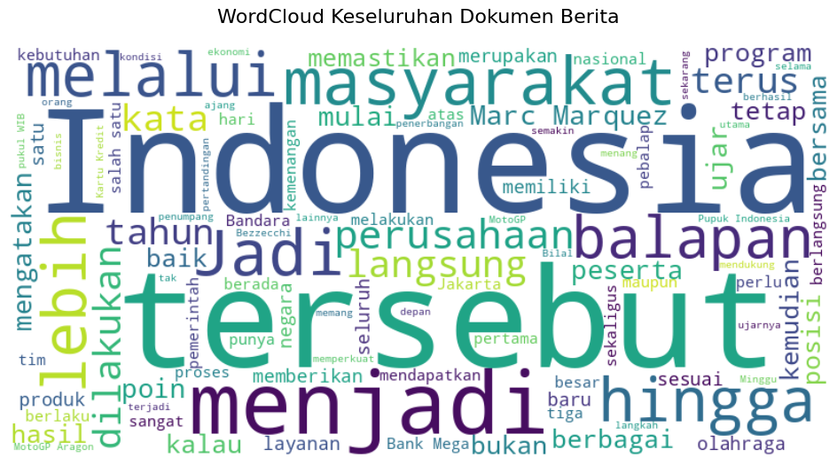

from gensim.models import Word2Vec
kalimat = [
["pemerintah", "menaikkan", "harga", "saham", "pasar", "keuangan"],
["investor", "membeli", "saham", "perusahaan", "teknologi", "pasar"],
["atlet", "meraih", "medali", "emas", "dalam", "kompetisi", "olahraga"]
]
# 2. Atur parameter yang ingin Anda uji coba
n_vector = 10 # Dimensi vektor (bebas diganti, misal: 5, 10, 50, 100)
window_size = 5 # Ukuran window konteks (bebas diganti, misal: 1, 2, 3)
# 3. Membuat dan melatih model Skip-gram (sg=1)
model_skipgram = Word2Vec(
sentences=kalimat,
vector_size=n_vector,
window=window_size,
sg=1, # sg=1 untuk Skip-gram (sg=0 untuk CBOW)
min_count=1, # min_count=1 agar semua kata ikut dihitung
workers=1,
seed=42
)
def ekstrak_kombinasi_skipgram(kalimat_list, window_size):
pasangan_kombinasi = []
for kalimat in kalimat_list:
panjang_kalimat = len(kalimat)
for i, kata_target in enumerate(kalimat):
# Tentukan jangkauan jendela di kiri dan kanan
awal = max(0, i - window_size)
akhir = min(panjang_kalimat, i + window_size + 1)
for j in range(awal, akhir):
if i != j: # Abaikan jika indeksnya sama dengan kata target
kata_konteks = kalimat[j]
pasangan_kombinasi.append((kata_target, kata_konteks))
return pasangan_kombinasi
# 1. Ekstrak seluruh pasangan berdasarkan window_size
semua_pasangan = ekstrak_kombinasi_skipgram(kalimat, window_size=window_size)
# 2. Ambil hanya kombinasi pasangan yang UNIK (menghilangkan duplikat)
kombinasi_unik = sorted(list(set(semua_pasangan)))
# 3. Tampilkan Hasil
print(f"=== IDENTIFIKASI KOMBINASI KATA (window={window_size}) ===")
print(f"Total pasangan terbentuk : {len(semua_pasangan)}")
print(f"Total pasangan KATA UNIK : {len(kombinasi_unik)}\n")
print("Daftar Kombinasi Kata Unik (Target -> Konteks):")
for target, konteks in kombinasi_unik:
print(f"Target: '{target}' --> Konteks: '{konteks}'")
=== IDENTIFIKASI KOMBINASI KATA (window=5) ===
Total pasangan terbentuk : 100
Total pasangan KATA UNIK : 98
Daftar Kombinasi Kata Unik (Target -> Konteks):
Target: 'atlet' --> Konteks: 'dalam'
Target: 'atlet' --> Konteks: 'emas'
Target: 'atlet' --> Konteks: 'kompetisi'
Target: 'atlet' --> Konteks: 'medali'
Target: 'atlet' --> Konteks: 'meraih'
Target: 'dalam' --> Konteks: 'atlet'
Target: 'dalam' --> Konteks: 'emas'
Target: 'dalam' --> Konteks: 'kompetisi'
Target: 'dalam' --> Konteks: 'medali'
Target: 'dalam' --> Konteks: 'meraih'
Target: 'dalam' --> Konteks: 'olahraga'
Target: 'emas' --> Konteks: 'atlet'
Target: 'emas' --> Konteks: 'dalam'
Target: 'emas' --> Konteks: 'kompetisi'
Target: 'emas' --> Konteks: 'medali'
Target: 'emas' --> Konteks: 'meraih'
Target: 'emas' --> Konteks: 'olahraga'
Target: 'harga' --> Konteks: 'keuangan'
Target: 'harga' --> Konteks: 'menaikkan'
Target: 'harga' --> Konteks: 'pasar'
Target: 'harga' --> Konteks: 'pemerintah'
Target: 'harga' --> Konteks: 'saham'
Target: 'investor' --> Konteks: 'membeli'
Target: 'investor' --> Konteks: 'pasar'
Target: 'investor' --> Konteks: 'perusahaan'
Target: 'investor' --> Konteks: 'saham'
Target: 'investor' --> Konteks: 'teknologi'
Target: 'keuangan' --> Konteks: 'harga'
Target: 'keuangan' --> Konteks: 'menaikkan'
Target: 'keuangan' --> Konteks: 'pasar'
Target: 'keuangan' --> Konteks: 'pemerintah'
Target: 'keuangan' --> Konteks: 'saham'
Target: 'kompetisi' --> Konteks: 'atlet'
Target: 'kompetisi' --> Konteks: 'dalam'
Target: 'kompetisi' --> Konteks: 'emas'
Target: 'kompetisi' --> Konteks: 'medali'
Target: 'kompetisi' --> Konteks: 'meraih'
Target: 'kompetisi' --> Konteks: 'olahraga'
Target: 'medali' --> Konteks: 'atlet'
Target: 'medali' --> Konteks: 'dalam'
Target: 'medali' --> Konteks: 'emas'
Target: 'medali' --> Konteks: 'kompetisi'
Target: 'medali' --> Konteks: 'meraih'
Target: 'medali' --> Konteks: 'olahraga'
Target: 'membeli' --> Konteks: 'investor'
Target: 'membeli' --> Konteks: 'pasar'
Target: 'membeli' --> Konteks: 'perusahaan'
Target: 'membeli' --> Konteks: 'saham'
Target: 'membeli' --> Konteks: 'teknologi'
Target: 'menaikkan' --> Konteks: 'harga'
Target: 'menaikkan' --> Konteks: 'keuangan'
Target: 'menaikkan' --> Konteks: 'pasar'
Target: 'menaikkan' --> Konteks: 'pemerintah'
Target: 'menaikkan' --> Konteks: 'saham'
Target: 'meraih' --> Konteks: 'atlet'
Target: 'meraih' --> Konteks: 'dalam'
Target: 'meraih' --> Konteks: 'emas'
Target: 'meraih' --> Konteks: 'kompetisi'
Target: 'meraih' --> Konteks: 'medali'
Target: 'meraih' --> Konteks: 'olahraga'
Target: 'olahraga' --> Konteks: 'dalam'
Target: 'olahraga' --> Konteks: 'emas'
Target: 'olahraga' --> Konteks: 'kompetisi'
Target: 'olahraga' --> Konteks: 'medali'
Target: 'olahraga' --> Konteks: 'meraih'
Target: 'pasar' --> Konteks: 'harga'
Target: 'pasar' --> Konteks: 'investor'
Target: 'pasar' --> Konteks: 'keuangan'
Target: 'pasar' --> Konteks: 'membeli'
Target: 'pasar' --> Konteks: 'menaikkan'
Target: 'pasar' --> Konteks: 'pemerintah'
Target: 'pasar' --> Konteks: 'perusahaan'
Target: 'pasar' --> Konteks: 'saham'
Target: 'pasar' --> Konteks: 'teknologi'
Target: 'pemerintah' --> Konteks: 'harga'
Target: 'pemerintah' --> Konteks: 'keuangan'
Target: 'pemerintah' --> Konteks: 'menaikkan'
Target: 'pemerintah' --> Konteks: 'pasar'
Target: 'pemerintah' --> Konteks: 'saham'
Target: 'perusahaan' --> Konteks: 'investor'
Target: 'perusahaan' --> Konteks: 'membeli'
Target: 'perusahaan' --> Konteks: 'pasar'
Target: 'perusahaan' --> Konteks: 'saham'
Target: 'perusahaan' --> Konteks: 'teknologi'
Target: 'saham' --> Konteks: 'harga'
Target: 'saham' --> Konteks: 'investor'
Target: 'saham' --> Konteks: 'keuangan'
Target: 'saham' --> Konteks: 'membeli'
Target: 'saham' --> Konteks: 'menaikkan'
Target: 'saham' --> Konteks: 'pasar'
Target: 'saham' --> Konteks: 'pemerintah'
Target: 'saham' --> Konteks: 'perusahaan'
Target: 'saham' --> Konteks: 'teknologi'
Target: 'teknologi' --> Konteks: 'investor'
Target: 'teknologi' --> Konteks: 'membeli'
Target: 'teknologi' --> Konteks: 'pasar'
Target: 'teknologi' --> Konteks: 'perusahaan'
Target: 'teknologi' --> Konteks: 'saham'
# 4. Menampilkan hasil vektor angka untuk kata "saham"
kata_uji = "saham"
vektor_kata = model_skipgram.wv[kata_uji]
print(f"=== HASIL SKIIP-GRAM (n={n_vector}, window={window_size}) ===")
print(f"Ukuran dimensi vektor '{kata_uji}': {vektor_kata.shape[0]}")
print(f"Vektor angka untuk kata '{kata_uji}':\n{vektor_kata}\n")
=== HASIL SKIIP-GRAM (n=10, window=5) ===
Ukuran dimensi vektor 'saham': 10
Vektor angka untuk kata 'saham':
[ 0.00530819 0.09512772 0.04711951 0.05224992 0.04349924 0.05722775
0.00266594 -0.07442413 0.06794856 -0.00990942]
# 5. Menampilkan daftar seluruh kosakata yang berhasil dipelajari model
print("Daftar kata unik dalam vocabulary:")
print(list(model_skipgram.wv.index_to_key))
Daftar kata unik dalam vocabulary:
['pasar', 'saham', 'olahraga', 'kompetisi', 'dalam', 'emas', 'medali', 'meraih', 'atlet', 'teknologi', 'perusahaan', 'membeli', 'investor', 'keuangan', 'harga', 'menaikkan', 'pemerintah']
Algoritma Word2Vec : Skip-Gram#
Data Understanding#
import pandas as pd
import re
import matplotlib.pyplot as plt
import seaborn as sns
from wordcloud import WordCloud
from Sastrawi.StopWordRemover.StopWordRemoverFactory import StopWordRemoverFactory
from Sastrawi.Stemmer.StemmerFactory import StemmerFactory
from tqdm import tqdm
import logging
from gensim.models import Word2Vec
import numpy as np
from sklearn.model_selection import train_test_split
from sklearn.naive_bayes import GaussianNB
from sklearn.metrics import accuracy_score, classification_report, confusion_matrix
def visualisasi_wordcloud(teks_series):
# Mengambil daftar stopword bahasa Indonesia dari Sastrawi
factory = StopWordRemoverFactory()
stopword_indo = set(factory.get_stop_words())
# Menggabungkan seluruh baris teks menjadi satu string teks panjang
semua_teks = " ".join(str(teks) for teks in teks_series)
# Membuat objek WordCloud dan memasukkan stopword_indo sebagai parameter
wordcloud = WordCloud(width=800, height=400,
background_color='white',
stopwords=stopword_indo,
max_words=100).generate(semua_teks)
# Menampilkan WordCloud
plt.figure(figsize=(12, 6))
plt.imshow(wordcloud, interpolation='bilinear')
plt.axis("off")
plt.title("WordCloud Keseluruhan Dokumen Berita", fontsize=16, pad=20)
plt.show()
def visualisasi_panjang_kata(df, nama_kolom):
# Menghitung jumlah kata (token) per baris dokumen
df['jumlah_kata'] = df[nama_kolom].astype(str).apply(lambda x: len(x.split()))
# Setup kanvas grafik: 1 baris, 2 kolom
fig, axes = plt.subplots(1, 2, figsize=(15, 5))
# Grafik 1: Histogram (Melihat bentuk distribusi data)
sns.histplot(df['jumlah_kata'], bins=50, kde=True, color='blue', ax=axes[0])
axes[0].set_title('Distribusi Panjang Kata per Dokumen')
axes[0].set_xlabel('Jumlah Kata')
axes[0].set_ylabel('Frekuensi')
# Grafik 2: Boxplot (Mendeteksi anomali/outliers secara visual)
sns.boxplot(x=df['jumlah_kata'], color='orange', ax=axes[1])
axes[1].set_title('Boxplot Panjang Kata (Deteksi Anomali)')
axes[1].set_xlabel('Jumlah Kata')
plt.tight_layout()
plt.show()
# Menampilkan ringkasan statistik
print("=== Statistik Deskriptif Panjang Kata ===")
display(df['jumlah_kata'].describe())
def cari_kata(keyword, nama_kolom='teks'):
# Mencari kata di dalam kolom secara case-insensitive
hasil_pencarian = df_all[df_all[nama_kolom].astype(str).str.contains(keyword, case=False, na=False)]
print(f"Ditemukan {len(hasil_pencarian)} dokumen yang mengandung kata '{keyword}'.")
# Menampilkan hasil (Kategori dan teks terkait)
return hasil_pencarian[['kategori', nama_kolom]]
df_sport = pd.read_csv('data/dataset_detik_sport.csv')
df_finance = pd.read_csv('data/dataset_detik_finance.csv')
df_all_ori = pd.concat([df_sport, df_finance], ignore_index=True)
print(df_all_ori)
kategori url \
0 sport https://sport.detik.com/sport-lain/d-8651374/w...
1 sport https://sport.detik.com/moto-gp/d-8651046/ktm-...
2 sport https://sport.detik.com/moto-gp/d-8650852/jadw...
3 sport https://sport.detik.com/moto-gp/d-8650870/crut...
4 sport https://sport.detik.com/sport-lain/d-8650342/w...
.. ... ...
195 finance https://finance.detik.com/industri/d-8648768/d...
196 finance https://finance.detik.com/bursa-dan-valas/d-86...
197 finance https://finance.detik.com/bursa-dan-valas/d-86...
198 finance https://finance.detik.com/infrastruktur/d-8648...
199 finance https://finance.detik.com/berita-ekonomi-bisni...
teks
0 Sean Gelael dan Team WRT 32 akan coba meraih p...
1 KTM punya sejumlah alasan merekrut Luca Marini...
2 MotoGP 2026 akan berlanjut ke San Marino. Seri...
3 Cal Crutchlow membuat prediksi menarik soal ka...
4 Team WRT 32 sudah menuntaskan sesi latihan beb...
.. ...
195 PT Pupuk Indonesia (Persero) mencatatkan kiner...
196 Indeks Harga Saham Gabungan (IHSG) ditutup mel...
197 Bursa Efek Indonesia (BEI) menghadirkan instru...
198 PT Brantas Abipraya (Persero) mulai memangkas ...
199 Otorita Ibu Kota Nusantara (IKN) menjatuhkan s...
[200 rows x 3 columns]
df_all = df_all_ori.drop('url', axis=1)
print(df_all)
kategori teks
0 sport Sean Gelael dan Team WRT 32 akan coba meraih p...
1 sport KTM punya sejumlah alasan merekrut Luca Marini...
2 sport MotoGP 2026 akan berlanjut ke San Marino. Seri...
3 sport Cal Crutchlow membuat prediksi menarik soal ka...
4 sport Team WRT 32 sudah menuntaskan sesi latihan beb...
.. ... ...
195 finance PT Pupuk Indonesia (Persero) mencatatkan kiner...
196 finance Indeks Harga Saham Gabungan (IHSG) ditutup mel...
197 finance Bursa Efek Indonesia (BEI) menghadirkan instru...
198 finance PT Brantas Abipraya (Persero) mulai memangkas ...
199 finance Otorita Ibu Kota Nusantara (IKN) menjatuhkan s...
[200 rows x 2 columns]
print("Distribusi Kelas (Label) pada Dataset:")
print(df_all['kategori'].value_counts())
Distribusi Kelas (Label) pada Dataset:
kategori
sport 100
finance 100
Name: count, dtype: int64
print("Pengecekan data kosong (missing values) pada setiap kolom:")
print(df_all.isnull().sum())
Pengecekan data kosong (missing values) pada setiap kolom:
kategori 0
teks 0
dtype: int64
print("Pengecekan data duplikat (duplicate values) pada setiap kolom:")
print(df_all.duplicated().sum())
Pengecekan data duplikat (duplicate values) pada setiap kolom:
0
print("Mengecek panjang kata pada setiap baris data: ")
print(df_all['teks'].str.len())
Mengecek panjang kata pada setiap baris data:
0 1136
1 2345
2 3599
3 2362
4 2163
...
195 1665
196 930
197 3789
198 2721
199 1906
Name: teks, Length: 200, dtype: int64
print("Menganalisis panjang kata untuk mendeteksi anomali...")
visualisasi_panjang_kata(df_all, 'teks')
Menganalisis panjang kata untuk mendeteksi anomali...

=== Statistik Deskriptif Panjang Kata ===
count 200.000000
mean 337.535000
std 155.955601
min 138.000000
25% 239.000000
50% 306.000000
75% 378.500000
max 1238.000000
Name: jumlah_kata, dtype: float64
print("Membuat WordCloud...")
visualisasi_wordcloud(df_all['teks'])
Membuat WordCloud...

hasil = cari_kata("saham")
display(hasil.head())
Ditemukan 8 dokumen yang mengandung kata 'saham'.
| kategori | teks | |
|---|---|---|
| 106 | finance | Lembaga Penjamin Simpanan (LPS) memiliki dua f... |
| 109 | finance | Direktur Jenderal Stabilitas dan Pengembangan ... |
| 146 | finance | Founder & Chairman CT Corp, Chairul Tanjung me... |
| 148 | finance | Pasangan selebriti yang juga pendiri RANS Ente... |
| 193 | finance | PT Bank Tabungan Negara (Persero) Tbk (BTN) me... |
Data Preprocessing#
def preprocess_modular(teks, hapus_angka=True, hapus_stopword=True, pakai_stemming=True):
# 1. Case Folding & Hapus Tanda Baca
teks = str(teks).lower()
teks = re.sub(r'[^\w\s]', ' ', teks)
# 2. Opsional: Hapus Angka
if hapus_angka:
teks = re.sub(r'\d+', '', teks)
# 3. Tokenisasi
tokens = teks.split()
# 4. Opsional: Hapus Stopword
if hapus_stopword:
tokens = [w for w in tokens if w not in daftar_stopword]
# 5. Opsional: Stemming
if pakai_stemming:
teks_gabung = " ".join(tokens)
teks_stem = stemmer.stem(teks_gabung)
tokens = teks_stem.split()
# Return list of tokens (Format ideal untuk Gensim Word2Vec)
return tokens
def latih_skipgram(list_of_tokens, ukuran_vektor=50, ukuran_window=2):
"""Melatih model Word2Vec Skip-gram dari kolom token dataframe."""
model = Word2Vec(
sentences=list_of_tokens,
vector_size=ukuran_vektor,
window=ukuran_window,
sg=1, # sg=1 mengaktifkan Skip-gram
min_count=1, # Pastikan semua kata masuk vocabulary
workers=4, # Mempercepat komputasi
seed=42
)
return model
def get_vektor_rata_rata(tokens, model):
"""Merata-ratakan vektor setiap kata menjadi 1 vektor dokumen untuk klasifikasi ML."""
vektor_kata = [model.wv[kata] for kata in tokens if kata in model.wv]
if not vektor_kata:
# Jika dokumen kosong (semua kata terhapus stopword), kembalikan array 0
return np.zeros(model.vector_size)
return np.mean(vektor_kata, axis=0)
daftar_stopword = set(StopWordRemoverFactory().get_stop_words())
stemmer = StemmerFactory().create_stemmer()
tqdm.pandas()
# Preprocessing Penuh (Hapus Angka, Stopword, Stemming)
print("1. Memulai Preprocessing Skenario 1 (Ini akan memakan waktu karena Stemming)...")
df_all['token_skenario_1'] = df_all['teks'].progress_apply(
lambda x: preprocess_modular(x, hapus_angka=True, hapus_stopword=True, pakai_stemming=True)
)
1. Memulai Preprocessing Skenario 1 (Ini akan memakan waktu karena Stemming)...
0%| | 0/200 [00:00<?, ?it/s]
1%|█▍ | 2/200 [00:03<05:43, 1.74s/it]
2%|██▏ | 3/200 [00:07<08:13, 2.51s/it]
2%|██▊ | 4/200 [00:12<12:14, 3.75s/it]
2%|███▌ | 5/200 [00:14<10:01, 3.08s/it]
3%|████▎ | 6/200 [00:17<09:27, 2.92s/it]
4%|████▉ | 7/200 [00:24<13:56, 4.33s/it]
4%|█████▋ | 8/200 [00:28<13:34, 4.24s/it]
4%|█████▋ | 8/200 [00:29<11:59, 3.75s/it]
KeyboardInterrupt
print("\n2. Melatih Model Skip-gram...")
# Gensim memiliki sistem log tersendiri untuk menampilkan progress pelatihan
# Kita aktifkan logger-nya sejenak ke level INFO
logging.basicConfig(format='%(asctime)s : %(message)s', level=logging.INFO)
model_skenario_1 = latih_skipgram(df_all['token_skenario_1'], ukuran_vektor=50, ukuran_window=3)
# Kembalikan logger ke WARNING agar output tidak kotor setelah selesai
logging.getLogger().setLevel(logging.WARNING)
print("Pelatihan Skip-gram Selesai!")
print("\n3. Membuat Vektor Rata-rata Dokumen (Mean Pooling)...")
fitur_X = df_all['token_skenario_1'].progress_apply(
lambda x: get_vektor_rata_rata(x, model_skenario_1)
)
# Konversi ke DataFrame
df_skenario_1_X = pd.DataFrame(fitur_X.tolist())
df_skenario_1_y = df_all['kategori']
print("\nSeluruh proses Skenario 1 selesai!")
2. Melatih Model Skip-gram...
Exception ignored in: 'gensim.models.word2vec_inner.our_dot_float'
Pelatihan Skip-gram Selesai!
3. Membuat Vektor Rata-rata Dokumen (Mean Pooling)...
100%|██████████| 200/200 [00:00<00:00, 1079.51it/s]
Seluruh proses Skenario 1 selesai!
# Skenario 2: Pertahankan Angka, Hapus Stopword, Stemming
print("2. Memulai Preprocessing Skenario 2...")
df_all['token_skenario_2'] = df_all['teks'].progress_apply(
lambda x: preprocess_modular(x, hapus_angka=False, hapus_stopword=True, pakai_stemming=True)
)
2. Memulai Preprocessing Skenario 2...
100%|██████████| 200/200 [00:00<00:00, 1039.34it/s]
print("\n2. Melatih Model Skip-gram...")
# Gensim memiliki sistem log tersendiri untuk menampilkan progress pelatihan
# Kita aktifkan logger-nya sejenak ke level INFO
logging.basicConfig(format='%(asctime)s : %(message)s', level=logging.INFO)
model_skenario_1 = latih_skipgram(df_all['token_skenario_2'], ukuran_vektor=50, ukuran_window=3)
# Kembalikan logger ke WARNING agar output tidak kotor setelah selesai
logging.getLogger().setLevel(logging.WARNING)
print("Pelatihan Skip-gram Selesai!")
print("\n3. Membuat Vektor Rata-rata Dokumen (Mean Pooling)...")
fitur_X = df_all['token_skenario_2'].progress_apply(
lambda x: get_vektor_rata_rata(x, model_skenario_1)
)
# Konversi ke DataFrame
df_skenario_2_X = pd.DataFrame(fitur_X.tolist())
df_skenario_2_y = df_all['kategori']
print("\nSeluruh proses Skenario 2 selesai!")
2. Melatih Model Skip-gram...
Exception ignored in: 'gensim.models.word2vec_inner.our_dot_float'
Pelatihan Skip-gram Selesai!
3. Membuat Vektor Rata-rata Dokumen (Mean Pooling)...
100%|██████████| 200/200 [00:00<00:00, 1051.57it/s]
Seluruh proses Skenario 2 selesai!
Modeling & Evaluasi#
Skenario 1#
Melakukan Split antara data Train & Test Skenario 1
X_train, X_test, y_train, y_test = train_test_split(
df_skenario_1_X, df_skenario_1_y,
test_size=0.2,
random_state=42,
stratify=df_skenario_1_y
)
Membuat Model Skenario 1
model_nb_skenario1 = GaussianNB()
# 3. Melatih Model dengan Data Latih
model_nb_skenario1.fit(X_train, y_train)
# 4. Memprediksi Data Uji
y_pred = model_nb_skenario1.predict(X_test)
Evaluasi Skenario 1
print("=== HASIL EVALUASI NAIVE BAYES (SKENARIO 1) ===")
print(f"Akurasi Model : {accuracy_score(y_test, y_pred) * 100:.2f}%\n")
print("Laporan Klasifikasi Detail:")
print(classification_report(y_test, y_pred))
# 6. Visualisasi Confusion Matrix (Opsional, sangat bagus untuk laporan)
cm = confusion_matrix(y_test, y_pred)
plt.figure(figsize=(6, 4))
sns.heatmap(cm, annot=True, fmt='d', cmap='Blues',
xticklabels=model_nb_skenario1.classes_,
yticklabels=model_nb_skenario1.classes_)
plt.title('Confusion Matrix - Skenario 1')
plt.ylabel('Label Sebenarnya')
plt.xlabel('Label Prediksi')
plt.show()
=== HASIL EVALUASI NAIVE BAYES (SKENARIO 1) ===
Akurasi Model : 82.50%
Laporan Klasifikasi Detail:
precision recall f1-score support
finance 0.76 0.95 0.84 20
sport 0.93 0.70 0.80 20
accuracy 0.82 40
macro avg 0.85 0.82 0.82 40
weighted avg 0.85 0.82 0.82 40

Skenario 2#
Melakukan Split antara data Train & Test Skenario 2
X_train, X_test, y_train, y_test = train_test_split(
df_skenario_2_X, df_skenario_2_y,
test_size=0.2,
random_state=42,
stratify=df_skenario_2_y
)
Membuat Model Skenario 1
model_nb_skenario1 = GaussianNB()
# 3. Melatih Model dengan Data Latih
model_nb_skenario1.fit(X_train, y_train)
# 4. Memprediksi Data Uji
y_pred = model_nb_skenario1.predict(X_test)
Evaluasi Skenario 1
print("=== HASIL EVALUASI NAIVE BAYES (SKENARIO 1) ===")
print(f"Akurasi Model : {accuracy_score(y_test, y_pred) * 100:.2f}%\n")
print("Laporan Klasifikasi Detail:")
print(classification_report(y_test, y_pred))
# 6. Visualisasi Confusion Matrix (Opsional, sangat bagus untuk laporan)
cm = confusion_matrix(y_test, y_pred)
plt.figure(figsize=(6, 4))
sns.heatmap(cm, annot=True, fmt='d', cmap='Blues',
xticklabels=model_nb_skenario1.classes_,
yticklabels=model_nb_skenario1.classes_)
plt.title('Confusion Matrix - Skenario 1')
plt.ylabel('Label Sebenarnya')
plt.xlabel('Label Prediksi')
plt.show()
=== HASIL EVALUASI NAIVE BAYES (SKENARIO 1) ===
Akurasi Model : 77.50%
Laporan Klasifikasi Detail:
precision recall f1-score support
finance 0.69 1.00 0.82 20
sport 1.00 0.55 0.71 20
accuracy 0.78 40
macro avg 0.84 0.78 0.76 40
weighted avg 0.84 0.78 0.76 40